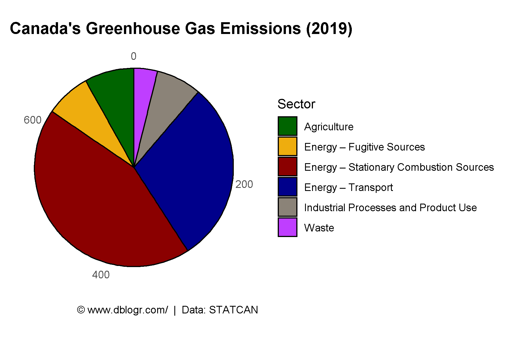
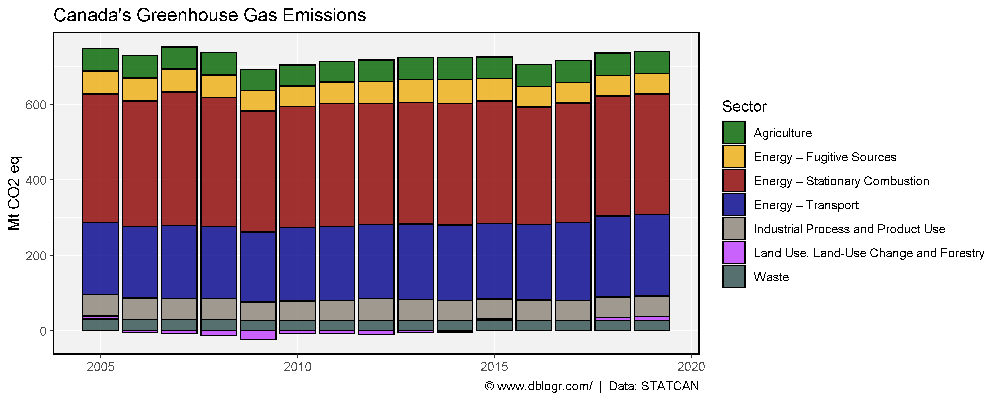
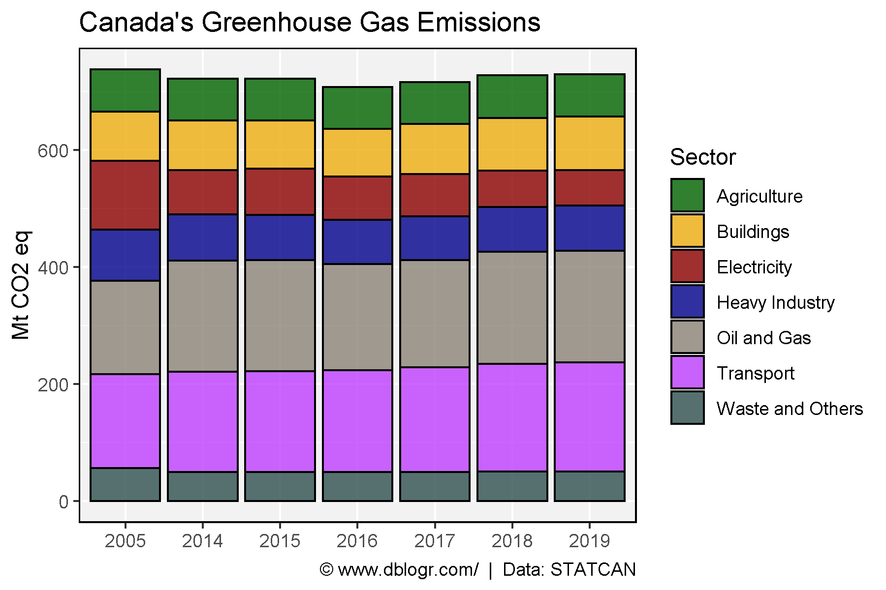
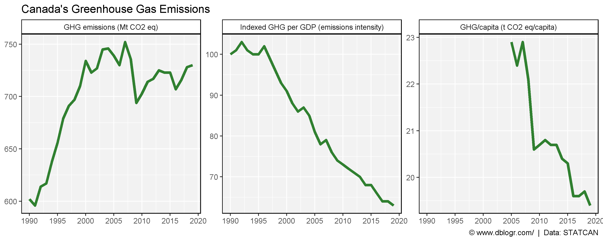

# devtools::install_github("derekmichaelwright/agData")
library(agData) # Loads: tidyverse, ggpubr, ggbeeswarm, ggrepel
library(readxl) # read_xlsx()# Prep data
blank_theme <- theme_minimal() +
theme(
axis.title = element_blank(),
axis.ticks.y = element_blank(),
axis.text.y = element_blank(),
panel.border = element_blank(),
panel.grid = element_blank(),
plot.title = element_text(size = 14, face = "bold")
)
xx <- read_xlsx("canada_ghg_data.xlsx", "Table1")
# Plot
mp <- ggplot(xx, aes(x = "", y = `Mt CO2 eq`, fill = Sector)) +
geom_bar(stat = "identity", color = "black") +
coord_polar("y", start = 0) +
scale_fill_manual(values = agData_Colors) +
blank_theme +
labs(title = "Canada's Greenhouse Gas Emissions (2019)",
y = "GHG/capita (t CO2 eq/capita)", x = NULL,
caption = "\xa9 www.dblogr.com/ | Data: STATCAN")
ggsave("canada_ghg_01.png", mp, width = 6, height = 4)
# Prep data
xx <- read_xlsx("canada_ghg_data.xlsx", "Table2") %>%
gather(Sector, Value, 2:ncol(.))
# Plot
mp <- ggplot(xx, aes(x = Year, y = Value, fill = Sector)) +
geom_bar(stat = "identity", color = "black") +
scale_fill_manual(values = agData_Colors) +
theme_agData() +
labs(title = "Canada's Greenhouse Gas Emissions",
y = "Mt CO2 eq", x = NULL,
caption = "\xa9 www.dblogr.com/ | Data: STATCAN")
ggsave("canada_ghg_02.png", mp, width = 10, height = 4)
# Prep data
xx <- read_xlsx("canada_ghg_data.xlsx", "Table3") %>%
slice(-1) %>%
gather(Year, Value, 2:ncol(.))
# Plot
mp <- ggplot(xx, aes(x = Year, y = Value, fill = Sector)) +
geom_bar(stat = "identity", color = "black") +
scale_fill_manual(values = agData_Colors) +
theme_agData() +
labs(title = "Canada's Greenhouse Gas Emissions",
y = "Mt CO2 eq", x = NULL,
caption = "\xa9 www.dblogr.com/ | Data: STATCAN")
ggsave("canada_ghg_03.png", mp, width = 6, height = 4)
# Prep data
x1 <- read_xlsx("canada_ghg_data.xlsx", "Table4") %>%
gather(Trait, Value, 2:3)
x2 <- read_xlsx("canada_ghg_data.xlsx", "Table5") %>%
gather(Trait, Value, 2)
xx <- bind_rows(x1, x2) %>%
mutate(Trait = factor(Trait, levels = unique(Trait)))
# Plot
mp <- ggplot(xx, aes(x = Year, y = Value)) +
geom_line(color = "darkgreen", alpha = 0.8, size = 1.5) +
facet_wrap(Trait ~ . , scales = "free_y") +
scale_x_continuous(breaks = seq(1990, 2020, 5)) +
theme_agData() +
labs(title = "Canada's Greenhouse Gas Emissions",
x = NULL, y = NULL,
caption = "\xa9 www.dblogr.com/ | Data: STATCAN")
ggsave("canada_ghg_04.png", mp, width = 10, height = 4)
© Derek Michael Wright www.dblogr.com/